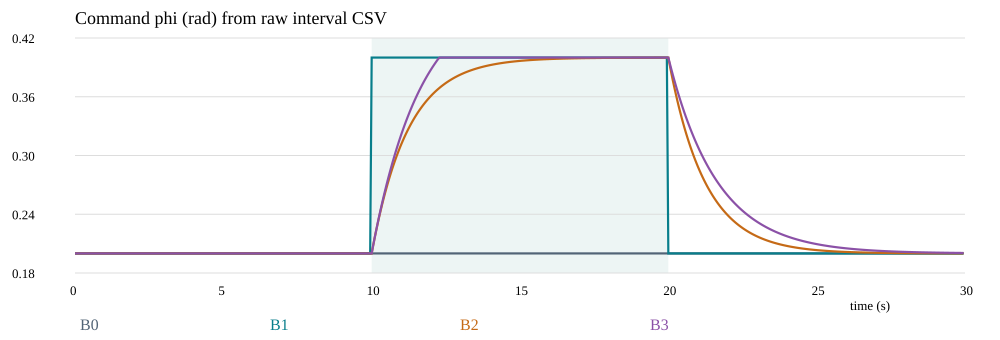
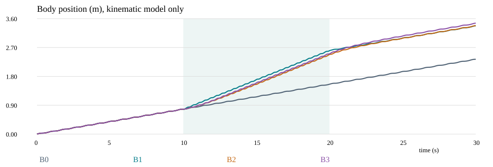

Lab05 Reportรายงาน Lab05 Hormone และ SO2 CPG
อิทธิพล แป้นอ้อย / 6752500053 · กลุ่ม __________ · วันที่ทดลอง 09/11/2026
วัตถุประสงค์ สถาปัตยกรรม และที่มา
เปรียบเทียบ B0 fixed, B1 direct, B2 hormone และ B3 binding ablation ใน proposed course model โดยใช้ทางเดิน S → controller → R_used → bounded phi/stride → SO(2) CPG → tripod decoder → kinematic body ระบบหลักยังไม่มี independent sensory feedback จาก terrain; contact demo แยกจาก controller ไม่ใช่ full ALCS/MNLC ของบทความ [1–2]
สมการ Euler H_new=clamp(H_old+dt(P−C−B),0,1), P=k_prod S, C=k_clear H_old, B=k_bind R_old และ affine mapping เป็น course model ส่วน SIF=population SD และ release=1/(1+exp(−SIF)) อ้างแนวสมการใน paper; paired-product Pearson ของ demo เป็น proposed course definition ไม่อ้างว่าตรง Eq.(3) ตามพิมพ์
ก่อนรัน ผู้ช่วยบันทึก hypothesis ใน PREDICTIONS_BEFORE_RUN.md ว่า B2 ลด max-step แต่เพิ่ม latency/recovery เทียบ B1 และ B3 ยังมี memory แม้ไม่มี binding ไม่อ้างว่าเป็น prediction ที่ผู้เรียนคิดเองก่อนเห็นข้อมูล
Protocol และการตรวจเวลา
dt=.05 s, duration30 s, alpha1.10, lift=.03 m; initial oscillator(.10,0), warmup10 s ด้วย phi=.20 ร่วมกัน แล้ว reset H/R/body/log ใช้ S=0/1/0 ที่0/10/20 s ทุก condition มี601 states/600 intervals ไม่ใช้random noise ตรวจแล้ว hormone ของ Lab04 ให้ผลตรงกับ Lab05 สำหรับ600 updatesรวมfault ทั้ง rates B2/B3
| command s | end s | H_start | H_end | R_used | phi rad | stride m |
|---|
| 10.000000 | 10.050000 | 0.000000 | 0.040000 | 0.000000 | 0.200000 | 0.055000 |
| 10.050000 | 10.100000 | 0.040000 | 0.078400 | 0.040000 | 0.208000 | 0.055400 |
| 20.000000 | 20.050000 | 0.999715 | 0.959727 | 0.999715 | 0.399943 | 0.064997 |
B1 command latency=0 แต่ state latency=.05 s เพราะ log หลัง update; B2 ใช้ R จากต้นช่วง จึง command10.05 จึงใช้ phi=.208 นี่เป็น numerical scheduling ไม่ใช่ physical latency
ผลจาก comparison/metrics.json
| C | TV phi rad | maxΔphi | TV stride m | latency s | recovery s | on Hz | on m |
|---|
| B0 | 0.000000 | 0.000000 | 0.000000 | N/A | N/A | 0.624877 | 0.778743 |
| B1 | 0.400000 | 0.200000 | 0.020000 | 0.000000 | 0.000000 | 1.268366 | 1.825152 |
| B2 | 0.399827 | 0.008000 | 0.019991 | 0.150000 | 2.850000 | 1.202760 | 1.706250 |
| B3 | 0.399534 | 0.008000 | 0.019977 | 0.150000 | 3.800000 | 1.225791 | 1.727498 |
maxΔphi หน่วย rad/step; timing ของ B0=N/A เพราะไม่มี step response ที่นิยามไว้ ไม่แทนด้วย0 ตัวเลขปัด6ตำแหน่ง ข้อมูลดิบเต็มอยู่CSV/JSON และนิยามใน README
กราฟและการวิเคราะห์ผล

รูป1 คำสั่ง phi จาก comparison/B*_intervals.csv พื้นสีคือ stimulus-on 10–20 s

รูป2 ตำแหน่ง body จาก comparison/B*_states.csv เป็น kinematic model ไม่ใช่ผลหุ่นยนต์จริง
B2 ลด max-step ของ phi จาก B1 .20 เป็น .008 rad/step (ลด96%) และ stride จาก .010 เป็น .0004 m/step แต่ command latency เพิ่ม0→.15 s และ recovery0→2.85 s สนับสนุน hypothesis ด้านคำสั่งที่เปลี่ยนทีละน้อย ไม่ใช่ข้อพิสูจน์ความเร่ง/แรง/ความปลอดภัย actuator ส่วน B3 ตัด k_bind=.2→0 แต่ยังมี H state และ clearance จึงมี memory และ recovery3.80 s ช้ากว่า B2 .95 s
Negative result: TV phi แทบเท่ากัน .400000 กับ .399827 rad จึงไม่สนับสนุนว่า hormone ต้องลด TV มาก การเปลี่ยนจาก baseline ขึ้นและกลับลงด้วย amplitude ใกล้กันทำให้ TV ใกล้กันได้ ต้องดู max-step และ trace ร่วมกัน Boundsเหมือนกันไม่บังคับ amplitude เท่ากัน: peak R_used ของ B0/B1/B2/B3 เท่ากับ0/1/.999715/1 และไม่มี command clamp ทั้ง4 condition
B2 on frequency=1.202760 Hz, on distance=1.706250 m ส่วน off frequency=.698234 Hz ยังมี transient จึงแยก pre/on/off ไม่แทนด้วยค่าเฉลี่ย30 s ไม่ใช้ supportlegs=3 เป็นข้อพิสูจน์ว่าไม่ล้ม และไม่เรียก TV ว่า Harmony หรือระยะทางว่า paper Displacement
One-factor Fault และ Contact
| Mapping | C | on Hz | on distance m |
|---|
| comparison | B1 | 1.268366 | 1.825152 |
| comparison | B2 | 1.202760 | 1.706250 |
| phi_only | B1 | 1.268366 | 1.549111 |
| phi_only | B2 | 1.202760 | 1.467193 |
| stride_only | B1 | 0.624877 | 0.914717 |
| stride_only | B2 | 0.624877 | 0.901666 |
ตรวจทุกintervalแล้ว phi-only คง stride=.055 m ส่วน stride-only คง phi=.20 rad; stride-only คง on frequency=.624877 Hz แต่เปลี่ยน on distance ในแบบจำลองนี้ จึงแยกผลของการปรับจังหวะกับขนาดก้าวได้ ไม่อ้าง terrain หรือแรงบิดจริง
Fault: ทุกconditionตรวจNaNและfallbackก่อนcommand15.00 s ให้ R_used=0, phi=.20, stride=.055; B2/B3 reset H ด้วย B2 state15.05 H=0 และ15.10 H=.04 หลังinputกลับปกติ ZeroคงH=0, oneอยู่ในbounds, spikeเปิดเพียงหนึ่งinterval10.00 s; timingของnon-step profilesเป็นN/A ไม่ใช่0
| Case | SI LF | SI RF | SIF | MAE |
|---|
| matched | 1.000000 | 1.000000 | 0.000000 | 0.000000 |
| gain-offset | 1.000000 | 1.000000 | 0.000000 | 0.162844 |
| mixed-delay | 1.000000 | 0.000009 | 0.499995 | 0.226007 |
| all-inverted | -1.000000 | -1.000000 | 0.000000 | 0.631375 |
| constant | N/A | N/A | N/A | 0.000000 |
| fault | 1.000000 | 1.000000 | 0.000000 | 0.000000 |
Matched SI1/SIF0 แต่ gain-offset ยังSI1แม้MAE=.162844 เนื่องจากPearsonไม่ไวต่อpositive scale/offset; all-inverted SI−1ทุกขาแต่SIF≈0และrelease=.5 จึงเป็น common-mode blind spot; mixed-delayทำให้3ขาSI≈1อีก3ขา≈0; constant variance0ให้SI/SIF/release=N/A แม้MAE0 NaNหนึ่งsampleที่15.00กระทบ50rollingwindowsถึง17.45 s (ไม่นับstartup49rows) แล้วกลับvalid17.50 s ไม่มีการต่อCg/HR/MI_H
ข้อสรุปและการทำซ้ำ
หลักฐานรองรับว่า hormone ลด max-step ของคำสั่งแลกความหน่วงและความจำหลังinputหาย ยังไม่รองรับ stability/energy/physical latency ต้องเพิ่ม body dynamics, force/IMU/CoM, motor current, calibration และทดลองจริงก่อน การรันซ้ำ deterministicยืนยัน reproducibility ไม่ใช่ independent trials
Python version, commands และ source hash: RUN_MANIFEST.json; หลักฐานตรวจ9ข้อ: VERIFICATION.txt; คำตอบทุกข้อ: WORKSHEET_COMPLETED_TH.md; วิธีรันซ้ำจากsnapshot: README_REPRODUCE.md; predictionก่อนรัน: PREDICTIONS_BEFORE_RUN.md
[1] README, worksheet, SOURCES และcourse_model ของ Lab05 รายวิชา RAE67: https://github.com/potiwat/RAE67_bio_ins/tree/main/lab_05
[2] Ngamkajornwiwat et al.(2020), DOI10.1109/ACCESS.2020.2992794 ใช้เป็นแนวคิดอ้างอิง ไม่ได้reproducecontrollerหรือผลterrainของpaper